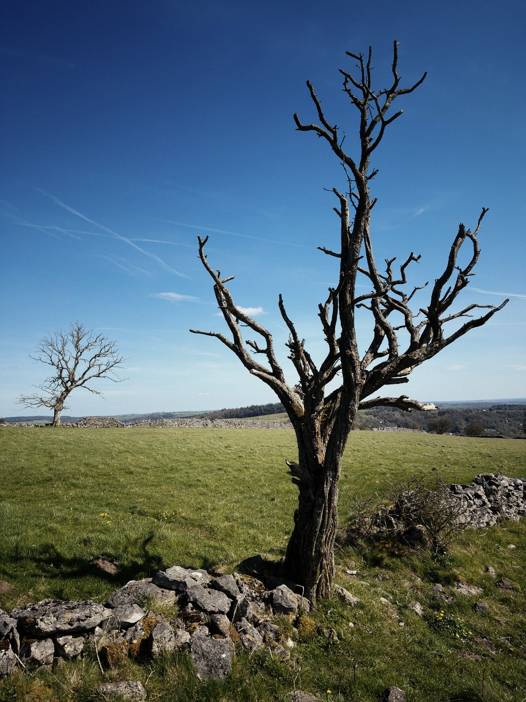

The looks
Here is every CubeCam look: the ten that come with the app, and extra ones made the same way. Choose one to see it on a photograph, and drag across the picture to compare it with the camera's own version.
All of them are free to download. Each is a .cube file, so it works in any app that takes a 3D LUT, such as photo and video editors on a computer.


Drag across the picture to compare it with the camera's own version, on the left.
Eleven .cube files, about 4 MB.
Using them
The ten that come with CubeCam are already in the app, so there is nothing to add. The files here are for using the same looks elsewhere. Each one is the look as CubeCam applies it at 100%, without the grain, which the app adds separately.
To add an extra look to CubeCam, download it on your iPhone, then in CubeCam go to Settings and, under Your looks, tap Import a .cube file. Leave Input on Standard picture. The guide has the details.
Every file is a 33-point 3D LUT for finished pictures (sRGB / Rec.709), about 1 MB.
Each look here is made for CubeCam and is ours to give away. Use them on your own photographs and videos however you like; please don't sell them or pass them off as your own.